K-ON!! OP Single - GO! GO! MANIAC
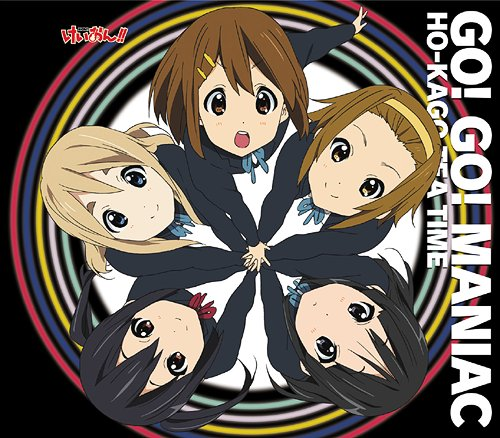
Tracklist
- 01. GO! GO! MANIAC
- 02. Genius...!
- 03. GO! GO! MANIAC (Instrumental)
- 04. Genius...! (Instrumental)
K-ON!! OP2 Single - Utauyo!! MIRACLE
Tracklist
- 01. Utauyo!! MIRACLE
- 02. Kira Kira Days
- 03. Utauyo!! MIRACLE (Instrumental)
- 04. Kira Kira Days (Instrumental)
K-ON!! ED Single - Listen!!
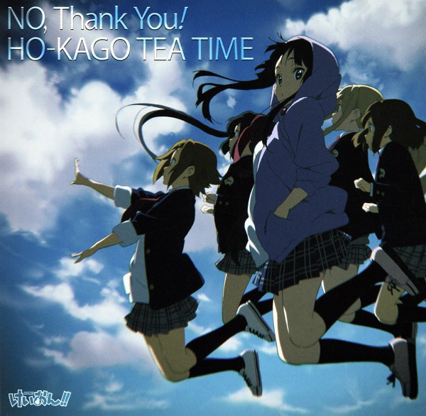
Tracklist
- 01. Listen!!
- 02. Our MAGIC
- 03. Listen!! (Instrumental)
- 04. Our MAGIC (Instrumental)
K-ON!! ED2 Single - NO,Thank You!
Tracklist
- 01. No,Thank You!
- 02. Girls in Wonderland
- 03. NO,Thank You! (Instrumental)
- 04. Girls in Wonderland (Instrumental)
K-ON!! Maxi Single - Pure Pure Heart
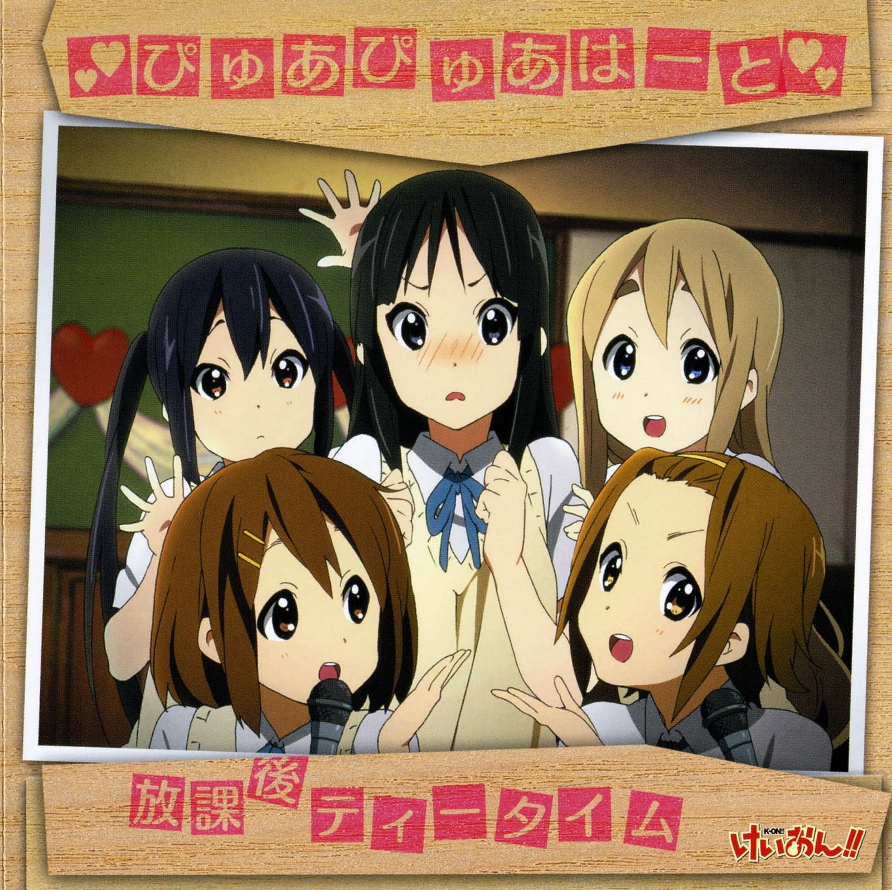
Tracklist
- 01. Pure Pure Heart
- 02. Sakuragaoka Joshi Koutou Gakkou Kouka (Rock Ver.)
- 03. Pure Pure Heart (Instrumental)
- 04. Sakuragaoka Joshi Koutou Gakkou Kouka (Rock Ver.) (Instrumental)
- 05. Pure Pure Heart (Instrumental -Guitar1)
- 06. Pure Pure Heart (Instrumental -Guitar2)
- 07. Pure Pure Heart (Instrumental -Keyboard)
- 08. Pure Pure Heart (Instrumental -Bass)
- 09. Pure Pure Heart (Instrumental -Drums)
K-ON!! Insert Song Single - Gohan wa Okazu
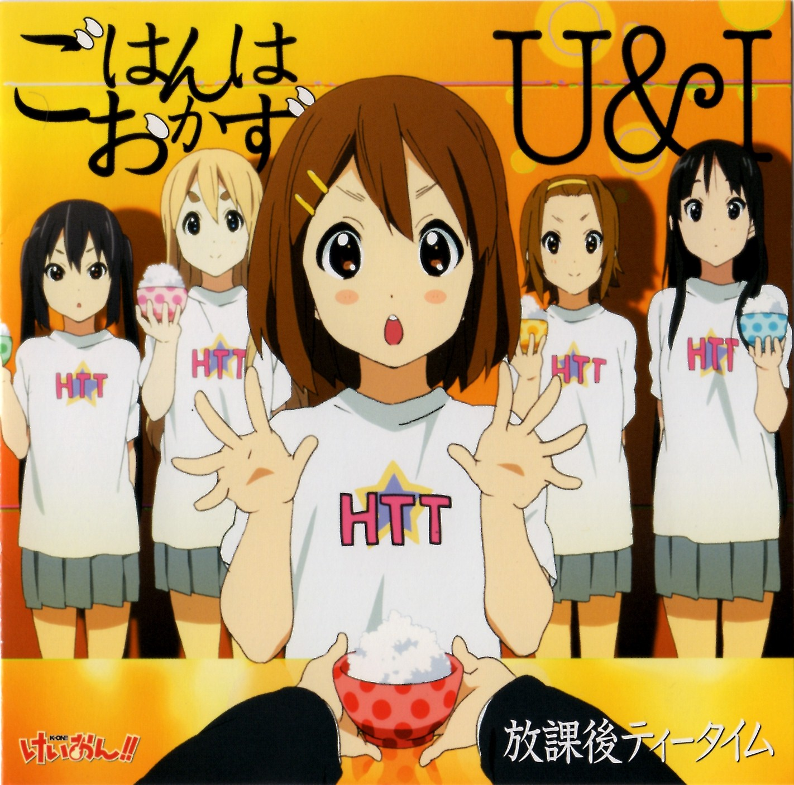
Tracklist
- 01. Gohan wa Okazu
- 02. U&I
- 03. Gohan wa Okazu (Instrumental)
- 04. U&I (Instrumental)
- 05. Gohan wa Okazu (Instrumental "-Guitar 1")
- 06. Gohan wa Okazu (Instrumental "-Guitar 2")
- 07. Gohan wa Okazu (Instrumental "-Keyboard")
- 08. Gohan wa Okazu (Instrumental "-Bass")
- 09. Gohan wa Okazu (Instrumental "-Drums")
- 10. U&I (Instrumental "-Guitar 1")
- 11. U&I (Instrumental "-Guitar 2")
- 12. U&I (Instrumental "-Keyboard")
- 13. U&I (Instrumental "-Bass")
- 14. U&I (Instrumental "-Drums")
K-ON!! Insert Song Album - Houkago Tea Time II
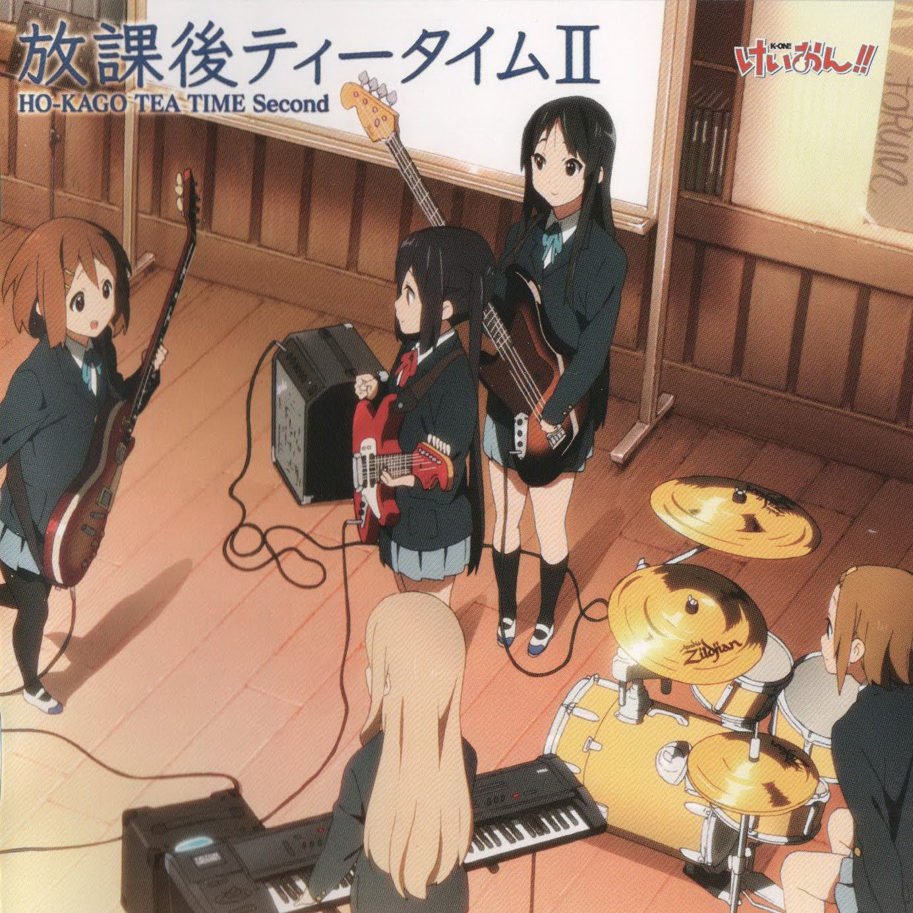
Tracklist
- 01. Ichigo Parfait ga Tomaranai (Studio Mix)
- 02. Pure Pure Heart (Studio Mix)
- 03. Honey sweet tea time (Studio Mix)
- 04. Samidare 20 Love (Studio Mix)
- 05. Gohan wa Okazu (Studio Mix)
- 06. Tokimeki Sugar (Studio Mix)
- 07. Fuyu no Hi (Studio Mix)
- 08. U&I (Studio Mix)
- 09. Tenshi ni Fureta yo! (Studio Mix)
- 10. Interlude
- 11. Houkago Tea Time (Studio Mix)
K-ON!! Character Image Songs - Hirasawa Yui
Tracklist
- 01. Oh My Giita!!
- 02. Shiawase Hiyori
- 03. Come with Me!! (Yui Ver.)
- 04. Oh My Giita!! (Instrumental)
- 05. Shiawase Hiyori (Instrumental)
- 06. Come with Me!! (Yui Ver.)
K-ON!! Character Image Songs - Akiyama Mio
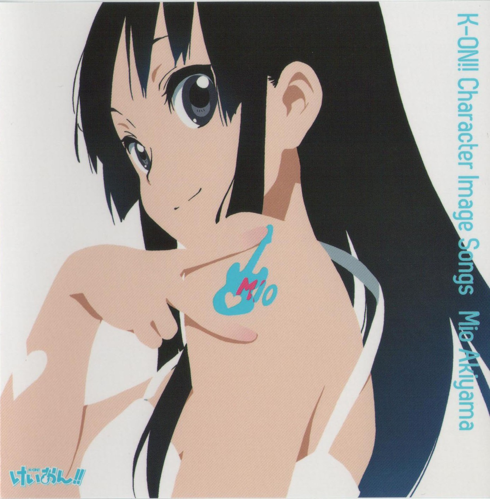
Tracklist
- 01. Seishun Vibration
- 02. Soukuu no Monologue
- 03. Come with Me!! (Mio Ver.)
- 04. Seishun Vibration (Instrumental)
- 05. Soukuu no Monologue (Instrumental)
- 06. Come with Me!! (Instrumental)
K-ON!! Character Image Songs - Nakano Azusa
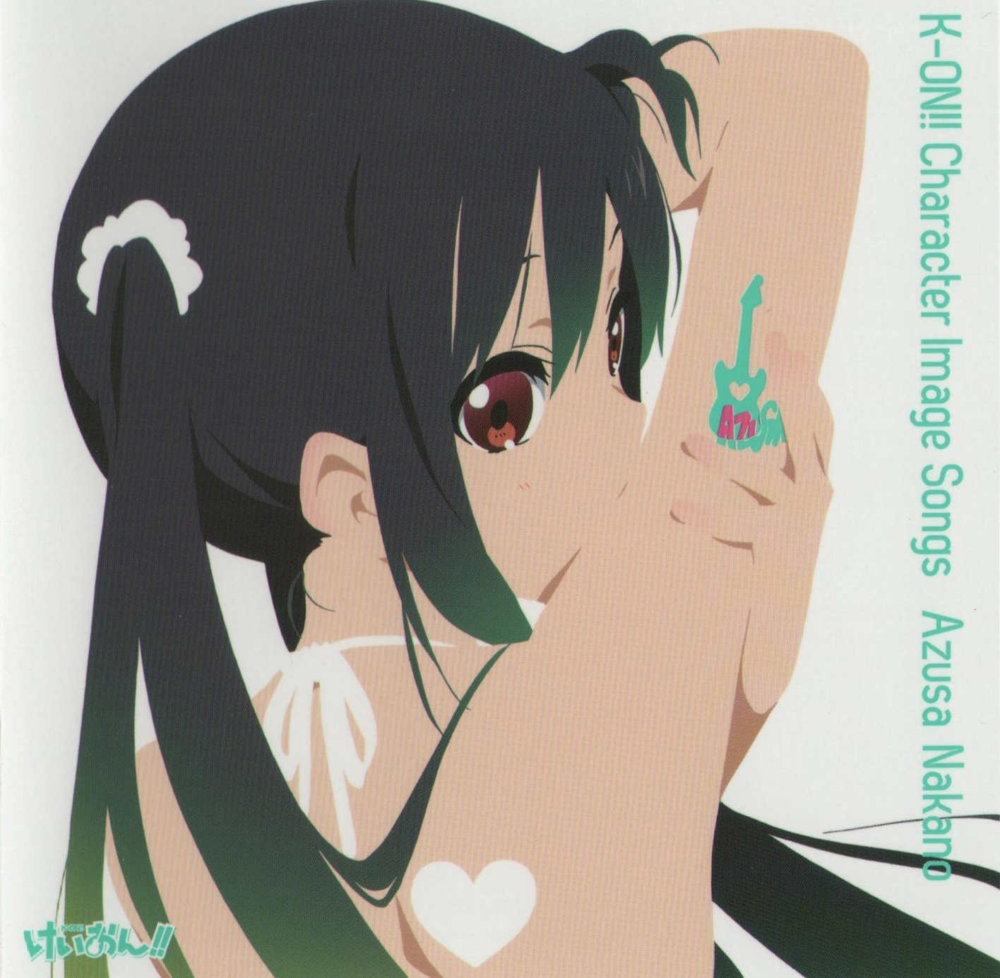
Tracklist
- 01. Over the Starlight
- 02. Joyful Todays
- 03. Come with Me!! (Azusa Ver.)
- 04. Over the Starlight (Instrumental)
- 05. Joyful Todays (Instrumental)
- 06. Come with Me!! (Instrumental)
K-ON!! Character Image Songs - Tainaka Ritsu
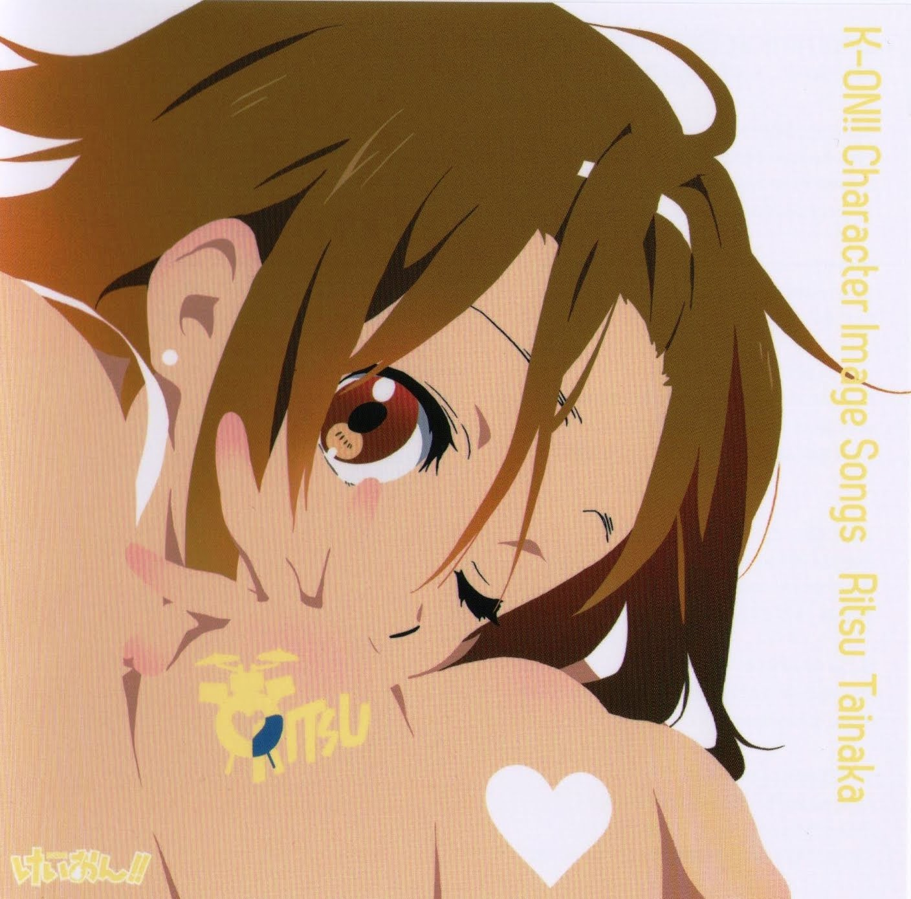
Tracklist
- 01. Drumming Shining My Life
- 02. Yuuzora a la Cart
- 03. Come with Me!! (Ritsu Ver.)
- 04. Drumming Shining My Life (Instrumental)
- 05. Yuuzora a la Cart (Instrumental)
- 06. Come with Me!! (Instrumental)
K-ON!! Character Image Songs - Kotobuki Tsumugi
Tracklist
- 01. Diary wa Fortissimo
- 02. Yasai no Jounetsu
- 03. Come with Me!! (Tsumugi Ver.)
- 04. Diary wa Fortissimo (Instrumental)
- 05. Yasai no Jounetsu (Instrumental)
- 06. Come with Me!! (Instrumental)
K-ON!! Character Image Songs - Hirasawa Ui
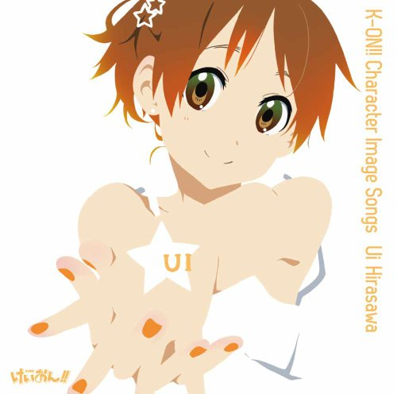
Tracklist
- 01. Uki Uki New! My Way
- 02. Shiny GEMS
- 03. Come with Me!! (Ui Ver.)
- 04. Uki Uki New! My Way (Instrumental)
- 05. Shiny GEMS (Instrumental)
- 06. Come with Me!! (Instrumental)
K-ON!! Character Image Songs - Manabe Nodoka
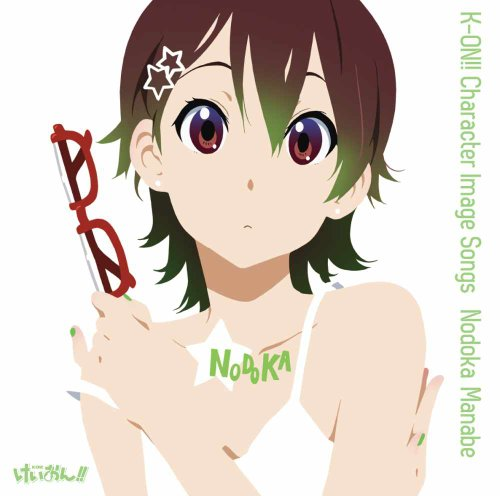
Tracklist
- 01. Jump
- 02. Hidamari Living
- 03. Come with Me!! (Madoka Ver.)
- 04. Jump (Instrumental)
- 05. Hidamari Living (Instrumental)
- 06. Come with Me!! (Instrumental)
K-ON!! Character Image Songs - Suzuki Jun
Tracklist
- 01. Junjou Bomber!!
- 02. Midnight Superstar
- 03. Come with Me!! (Jun Ver.)
- 04. Junjou Bomber!! (Instrumental)
- 05. Midnight Superstar (Instrumental)
- 06. Come with Me!! (Instrumental)
K-ON!! Insert Song Single - DEATH DEVIL - LOVE
Tracklist
- 01. LOVE
- 02. GENOM
- 03. LOVE (Instrumental)
- 04. GENOM (Instrumental)
K-ON!! Official Band Yarou yo!! ~ Let's MUSIC!!~
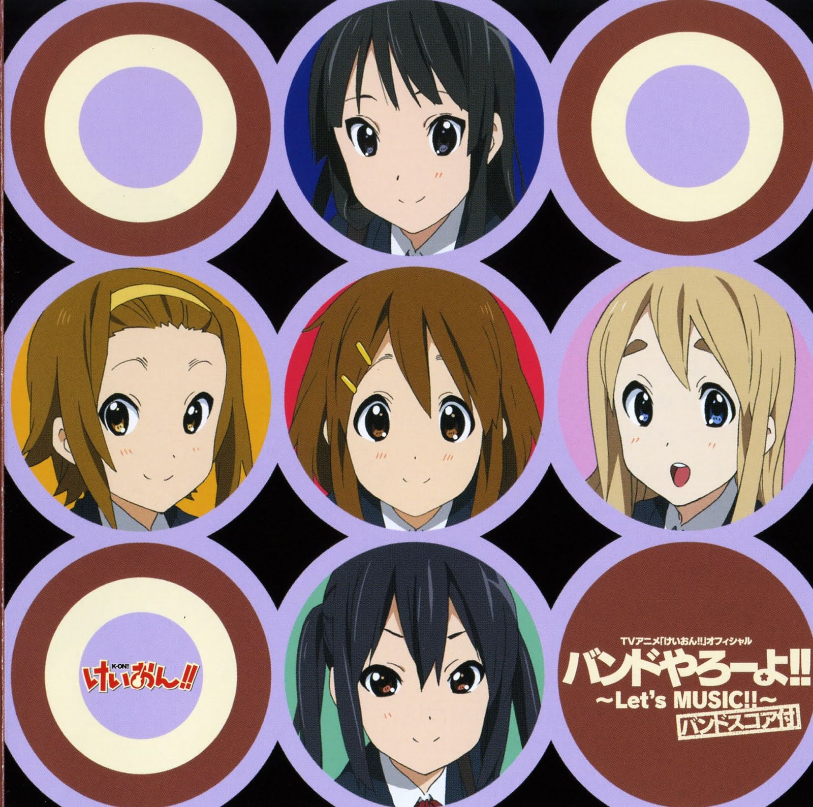
Tracklist
- 01. GO! GO! MANIAC (Instrumental)
- 02. GO! GO! MANIAC (Instrumental -Guitar 1)
- 03. GO! GO! MANIAC (Instrumental -Guitar 2)
- 04. GO! GO! MANIAC (Instrumental -Keyboard)
- 05. GO! GO! MANIAC (Instrumental -Bass)
- 06. GO! GO! MANIAC (Instrumental -Drums)
- 07. Listen!! (Instrumental)
- 08. Listen!! (Instrumental -Guitar 1)
- 09. Listen!! (Instrumental -Guitar 2)
- 10. Listen!! (Instrumental -Keyboard)
- 11. Listen!! (Instrumental -Bass)
- 12. Listen!! (Instrumental -Drums)
K-ON!! Official Band Yarouyo!! ~Let's MUSIC!! 2~ Band Score
Tracklist
- 01. Utauyo!! MIRACLE (Instrumental)
- 02. Utauyo!! MIRACLE (Instrumental "-Guitar 1")
- 03. Utauyo!! MIRACLE (Instrumental "-Guiter 2")
- 04. Utauyo!! MIRACLE (Instrumental "-Keyboard")
- 05. Utauyo!! MIRACLE (Instrumental "-Bass")
- 06. Utauyo!! MIRACLE (Instrumental "-Drums")
- 07. NO, Thank You! (Instrumental)
- 08. NO, Thank You! (Instrumental "-Guitar 1")
- 09. NO, Thank You! (Instrumental "-Guitar 2")
- 10. NO, Thank You! (Instrumental "-Keyboard")
- 11. NO, Thank You! (Instrumental "-Bass")
- 12. NO, Thank You! (Instrumental "-Drums")
K-ON!! Official Band Yarou yo!! ~Let's MUSIC!! 3~ Houkago Tea Time Hen
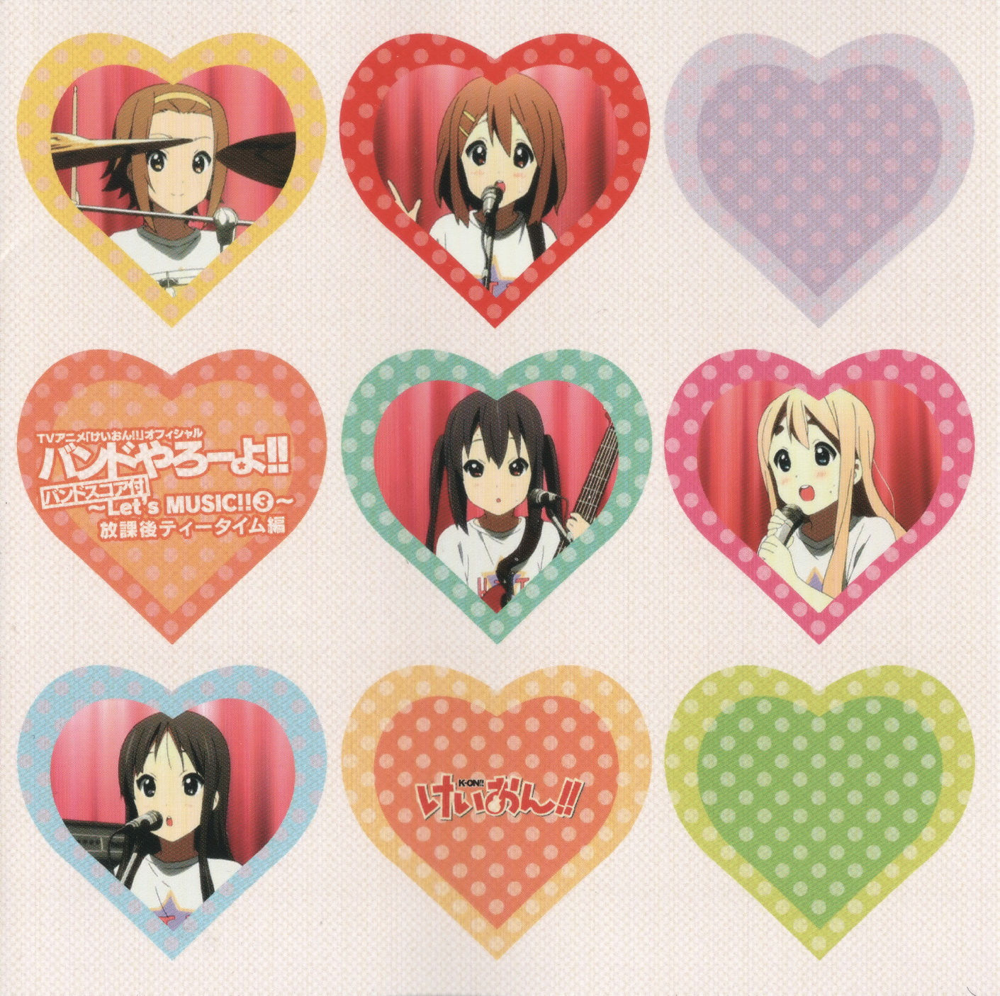
Tracklist
- Disc 1
- 01. Tenshi ni Fureta yo!
- 02. Musunde Hiraite
- 03. Fuwa Fuwa Time (Azusa Ui Jun Ver.)
- 04. Guitar Image 1
- 05. Guitar Image 2
- 06. Guitar Image 3
- 07. Guitar Image 4
- 08. Ajigawa Jinku
- 09. Norimi Oden ya Nite
- 10. Love (Intro Yui Shippai Ver.)
- 11. Sawako Guitar Solo
- 12. Fuwa Fuwa Time (Guitar Azusa no Yume Ver.)
- 13. Gohan wa Okazu (Guitar Azusa no Yume Ver.)
- 14. Yui Mio Ritsu Session
- 15. Subtitle Back #1
- 16. Subtitle Back #2
- 17. Subtitle Back #3
- 18. Subtitle Back #4
- 19. Subtitle Back #5
- 20. Subtitle Back #6
- 21. Subtitle Back #7
- 22. Subtitle Back #8
- 23. Subtitle Back #9
- 24. Subtitle Back #10
- 25. Subtitle Back #11
- 26. Subtitle Back #12
- 27. Subtitle Back #13
- 28. Subtitle Back #14
- 29. Subtitle Back #15
- 30. Subtitle Back #16
- 31. Subtitle Back #17
- 32. Subtitle Back #18
- 33. Subtitle Back #19
- 34. Subtitle Back #20
- 35. Subtitle Back #21
- 36. Subtitle Back #22
- 37. Subtitle Back #23
- 38. Subtitle Back #24
- 39. Subtitle Back #25
- 40. Subtitle Back #26
- 41. Natsu Fest Kyoku 1 "Rule"
- 42. Natsu Fest Kyoku 2 "Actress"
- 43. Natsu Fest Kyoku 3
- 44. Natsu Fest Kyoku 4
- 45. Food Court BGM 1
- 46. Food Court BGM 2
- 47. Food Court BGM 3
- Disc 2
- 01. Ichigo Parfait ga Tomara nai (Studio Mix) (Instrumental)
- 02. Pure Pure Heart (Studio Mix) (Instrumental)
- 03. Honey sweet tea time (Studio Mix) (Instrumental)
- 04. Samidare 20 Love (Studio Mix) (Instrumental)
- 05. Gohan wa Okazu (Studio Mix) (Instrumental)
- 06. Tokimeki Sugar (Studio Mix) (Instrumental)
- 07. Fuyu no Hi (Studio Mix) (Instrumental)
- 08. U&I (Studio Mix) (Instrumental)
- 09. Tenshi ni Fureta yo! (Studio Mix) (Instrumental)
- 10. Houkago Tea Time (Studio Mix) (Instrumental)
K-ON!! Official Band Yarouyo!! ~Let's MUSIC!! 4~
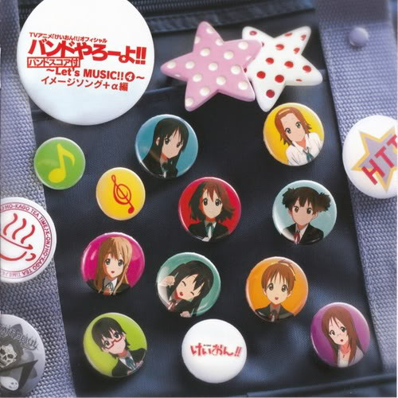
Tracklist
- 01. Cagayake! GIRLS (4nin Ver.) (TV size Ver.)
- 02. Don't say "lazy" (TV size Ver.)
- 03. Cagayake! GIRLS (5nin Ver.) (TV size Ver.)
- 04. GO! GO! MANIAC (TV size Ver.)
- 05. Listen!! (TV size Ver.)
- 06. Utauyo!! MIRACLE (TV size Ver.)
- 07. NO, Thank You! (TV size Ver.)
- 08. GO! GO! MANIAC (Instrumental)
- 09. GO! GO! MANIAC (Instrumental - Guitar 1)
- 10. GO! GO! MANIAC (Instrumental - Guitar 2)
- 11. GO! GO! MANIAC (Instrumental - Keyboard)
- 12. GO! GO! MANIAC (Instrumental - Bass)
- 13. GO! GO! MANIAC (Instrumental - Drums)
K-ON!! Original Sound Track Vol.1
Tracklist
- 01. One more tea?
- 02. Asahi wo abite
- 03. Futari no sekai
- 04. Dance of pickled scallion
- 05. Temptation with rain
- 06. Tostada
- 07. Kyoto no asa
- 08. Dragon God
- 09. Hamster no dance
- 10. Ano hi no kaerimichi
- 11. Tamamushi no zushi to sankaku jougi
- 12. Degital fancy doll
- 13. Gatten da!
- 14. Tea with you
- 15. Reason that doesn't develop
- 16. Cherry's feelings
- 17. Worry of cherry
- 18. Happy rainy day
- 19. Ame furi
- 20. Usagi to kame
K-ON!! Original Soundtrack Vol.2
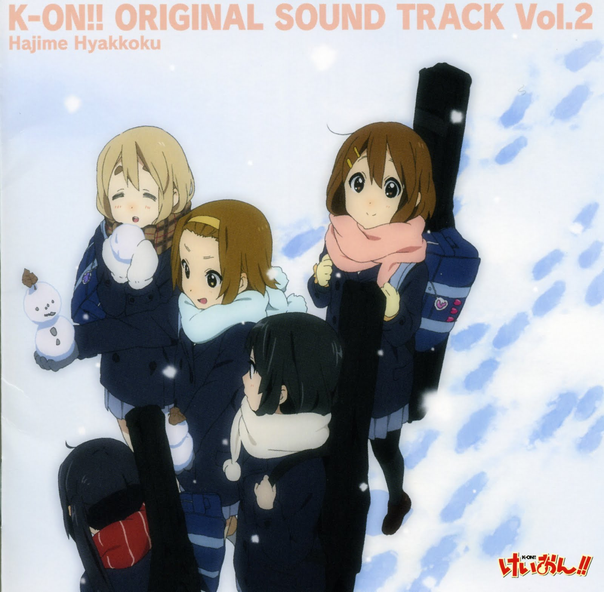
Tracklist
- 01. Early tea
- 02. My dearest Baumkuchen
- 03. Okashi no Merry Go Round
- 04. Pasadena Fwy
- 05. Na-i-sho!
- 06. Tarirariran!
- 07. Shiosai to Yuuhi
- 08. Sepia Shoku no Nikki
- 09. Tenpura Kun
- 10. Hard luck girl
- 11. Autumn reeze with you
- 12. Fine rain in afternoon
- 13. Cherry's toy box
- 14. Nuki-ashi Sashi-ashi Shinobi-ashi
- 15. Ningyo no Kataomoi
- 16. Kaidan no Kaidan
- 17. U&I ~Yuuhi no Kirei na Ano Oka de~
- 18. Unjou Chaya
- 19. Fudepen ~Ballpen~ (YuiAzu Ver.)
- 20. Sakuragaoka Joshi Koutougakkou Kouka
K-ON!! Live Event - Come with Me!! Live CD!
Tracklist
- Disc 1
- 01. ～オープニング (ライブイベント ~Come with Me!!~Ver.)
- 02. ～Overture (ライブイベント ~Come with Me!!~Ver.)
- 03. GO! GO! MANIAC (ライブイベント ~Come with Me!!~Ver.)
- 04. Listen!! (ライブイベント ~Come with Me!!~Ver.)
- 05. ～Introduction [Guitar] (ライブイベント ~Come with Me!!~Ver. 「Oh My ギー太!!」演奏前)
- 06. Oh My ギー太!! (ライブイベント ~Come with Me!!~Ver.)
- 07. ～Introduction [Bass] (ライブイベント ~Come with Me!!~Ver.)
- 08. 青春Vibration (ライブイベント ~Come with Me!!~Ver.)
- 09. ～Introduction [Drums] (ライブイベント ~Come with Me!!~Ver.)
- 10. Drumming Shining My Life (ライブイベント ~Come with Me!!~Ver.)
- 11. ～Introduction [Keyboard] (ライブイベント ~Come with Me!!~Ver.)
- 12. Diaryはフォルテシモ (ライブイベント ~Come with Me!!~Ver.)
- 13. ～Introduction [Guitar] (ライブイベント ~Come with Me!!~Ver. 「Over the Starlight」演奏前)
- 14. Over the Starlight (ライブイベント ~Come with Me!!~Ver.)
- 15. ウキウキNew! My Way (ライブイベント ~Come with Me!!~Ver.)
- 16. 純情Bomber!! (ライブイベント ~Come with Me!!~Ver.)
- 17. Jump (ライブイベント ~Come with Me!!~Ver.)
- Disc 2
- 01. ～MC「センターステージ登場」 (ライブイベント ~Come with Me!!~Ver.)
- 02. いちごパフェが止まらない (ライブイベント ~Come with Me!!~Ver.)
- 03. ときめきシュガー (ライブイベント ~Come with Me!!~Ver.)
- 04. Honey sweet tea time (ライブイベント ~Come with Me!!~Ver.)
- 05. ごはんはおかず (ライブイベント ~Come with Me!!~Ver.)
- 06. ～DEATH DEVIL登場 (ライブイベント ~Come with Me!!~Ver.)
- 07. Maddy Candy (ライブイベント ~Come with Me!!~Ver.)
- 08. ラヴ (ライブイベント ~Come with Me!!~Ver.)
- Disc 3
- 01. ～MC「ただ今、楽器準備中…」 (ライブイベント ~Come with Me!!~Ver.)
- 02. ぴゅあぴゅあはーと (ライブイベント ~Come with Me!!~Ver.)
- 03. U & I (ライブイベント ~Come with Me!!~Ver.)
- 04. U & I (Instrumental) (ライブイベント ~Come with Me!!~Ver.)
- 05. 天使にふれたよ! (ライブイベント ~Come with Me!!~Ver.)
- 06. ふわふわ時間 (ライブイベント ~Come with Me!!~Ver.)
- 07. NO, Thank You! (ライブイベント ~Come with Me!!~Ver.)
- 08. Utauyo!! MIRACLE (ライブイベント ~Come with Me!!~Ver.)
- 09. Cagayake! GIRLS (ライブイベント ~Come with Me!!~Ver.)
- 10. Don't say "lazy" (ライブイベント ~Come with Me!!~Ver.)
- 11. 桜が丘女子高等学校校歌 (ライブイベント ~Come with Me!!~Ver.)
- 12. Come with Me!! (ライブイベント ~Come with Me!!~Ver.)